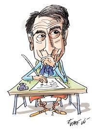
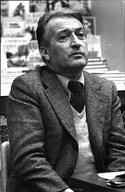
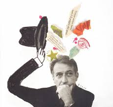

Gianni Rodari e l'animazione liquida
Gianni Rodari nel 1973 pubblica il primo e unico saggio della sua carriera, La grammatica della Fantasia. Introduzione all’arte di inventare storie. Rodari si sofferma sulla costruzione di storie. In questo testo, per la prima volta, viene messo per iscritto il concetto di “binomio fantastico”, cioè quella tecnica di scrittura che prevede l’unione di due parole slegate semanticamente, per dare un input creativo nella nascita di una nuova storia. Egli lo aveva testato nelle scuole elementari e i risultati erano stati sorprendenti. Un bambino di cinque anni e mezzo aveva proposto le parole “luce” e “scarpe” e ne uscì questa storia: C’era una volta un bimbo che si metteva sempre le scarpe di suo papà. Una sera il papà si era stufato che il bimbo gli prendeva le scarpe, allora lo mette attaccato alla luce, e poi a mezzanotte cade, allora dice il papà: – Cosa c’è, un ladro? Va a vedere e c’era il bambino per terra. Il bimbo era rimasto tutto il tempo acceso. Allora il papà ha provato a girargli la testa ma non si è spento, ha provato a tirargli le orecchie ma non si spegneva, ha provato a schiacciargli il naso ma non si spegneva, ha provato a tirargli i capelli ma non si spegneva, ha provato a schiacciargli l’ombelico ma non si spegneva, ha provato a tirargli via le scarpe e c’è riuscito, si è spento. Rodari suggerisce che questa tecnica, potrebbe essere trasferita ad altri linguaggi, come quello cinematografico. Il live action più famoso è stato diretto da Lino del Frà nel 1970 per La torta in cielo, una favola antimilitarista che racconta l’arrivo di una vera e propria torta al cioccolato nel cielo della borgata del Trullo di Roma. Data dall’unione delle parole ”torta” e “cielo”. Questa fiaba perde però la sua potenza fantasiosa in un adattamento che riflette l’atmosfera del movimento del ’68. Lino del Frà crea un film sulla disobbedienza infantile, modificando le intenzioni dell’opera originale.
Le trasposizioni cinematografiche degli scritti di Rodari sembrano una semplificazione del suo linguaggio e la scelta dei testi sembra privilegiare quelli meno sperimentali. La scelta di un testo più radicale la fa Anatolij Petrov che nel 1969 cura un cortometraggio ispirato a Passeggiata di un distratto: la storia di un bambino, Giovanni, che perde per strada i suoi arti perché sta con la testa fra le nuvole. Lo stile d’animazione è meno realistico, le forme sono sezioni pittoriche di colore. Vediamo la testa di Giovanni fare un giro di 360 gradi su sè stessa, il bambino perde gli arti, ma riesce a tornare a casa come se niente fosse. C’è un “allentamento dalla massa compatta”, per andare incontro a una forma nuova e malleabile. Il problema è che se nel testo originale Giovanni è un bambino in carne ed ossa, nella trasposizione cinematografica diventa un burattino. Storicamente nella costruzione di un film animato si tende a usare il reale come vincolo e si prende come modello il live action. Persino in quei passaggi che possono risultare più sperimentali c’è una spiegazione logica del perché l’animazione si allontana dalla realtà, proprio come succede nel caso di La passeggiata di un distratto.
L’animazione nasce con l’idea di animare l’inanimato, di creare forme mutevoli. Vari esempi provengono dal lavoro dei fratelli Fleischer, animatori e inventori della tecnica del rotoscopio, grazie al quale si ricalcavano le scene che erano state girate su pellicole in precedenza. La stessa funzione che aveva il rotoscopio lo ha il neural style transfer (Nst), un tipo di intelligenza artificiale che serve per creare delle animazioni attraverso l’uso dei voxel, ovvero i pixel in 3D. Questa tecnica può essere utilizzata per sperimentare delle animazioni liquide e giocare con la forma. Già la Pixar in collaborazione con Disney Research Studio ha utilizzato la Nst per creare uno dei personaggi principali del film Elemental, uscito nel 2023. Gli animatori non riuscivano a trovare una forma per Ember, rappresentazione fisica dell’elemento del fuoco. L’utilizzo di Nst e dell’intelligenza artificiale, apre prospettive sulla possibilità di creare animazioni sempre più liquide. Forse è proprio questo il modo per trasporre Gianni Rodari al cinema? “Ho provato a dare come input al software Leonardo una serie di filastrocche e fiabe di Rodari, e le sequenze animate che ne sono uscite sono già sorprendenti. Si fanno una serie di tentativi, si vede la forma che muta e ogni risultato sembra una potenziale creazione, perché come viene detto nella Grammatica della Fantasia: “sbagliando s’impara è un vecchio proverbio, il nuovo potrebbe dire sbagliando s’inventa”.”
